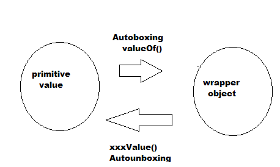
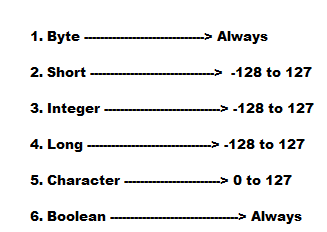

Auto boxing and Auto unboxing :
- Until 1.4 version, we can not provide primitive value in the place of wrapper object and wrapper object in the place of primitive .
- All required conversions should be performed explicitly by the programmer
- But from 1.5 version onwards, we can provide primitive value in the place of wrapper object and wrapper object in the place of primitive .
- All required conversions will be performed automatically by the compiler .
- These automatically conversions are called Auto boxing and Auto unboxing .
Auto boxing :
- Automatic conversions of primitive to wrapper object by compiler is called Autoboxing .
- Example : Integer I = 10; [ Compiler converts into to Integer automatically by Autoboxing . ]
- After compilation the above line will become : Integer I = Integer.valueOf(10);
- Internally Autoboxing is implemented by using valueOf() method .
Autounboxing ;
- Automatic conversions of wrapper object into primitive by compiler is called Autounboxing .
- Example : Integer I = new Integer(10);
int i = I; [Compiler converts Integer to int automatically by Autounboxing ]
- After compilation the above line will become
int i = I.intValue();
- Internally Autounboxing concept implemented by using xxxValue() method .

- It is valid in 1.5 version, but invalid in 1.4 version .
- From 1.5 version onwards we can use primitives and wrapper objects interchangeably .
- Note : If we are trying to perform Autounboxing for null reference we will get NullPointerException .
- Note: All wrapper objects are immutable i.e , once we created a wrapper object we can not perform any change in the existing object .
- Note: If we are trying to perform any change with those changes a new object will be created .
Conclusion :
- Internally to provide support for autoboxing a Buffer of wrapper object will be created at the time of wrapper class loading .
- By Autoboxing, if an object is required to create first it will check is it already there in the buffer or not .
- If it is not present in buffer then only a new object will be created .
- But buffer concept is available only in the following cases .

- Except this range in all remaining cases a new object will be created .
- Internally Autoboxing concept is implemented by using valueOf() method .
- Hence Buffering concept is applicable for valueOf() methods also .
Overloading w.r.t widening, var-arg and Autoboxing :
Widening vs Autoboxing :
Widening vs var-arg method :
Autoboxing vs var-arg method :
- In general var-arg method will get least priority i.e , if no other method matched then only var-arg method will get chance .
- Note : While resolving overloaded methods compiler will always gives the precedence in the following order .
- 1. Widening
- 2. Autoboxing
- 3. var-arg method